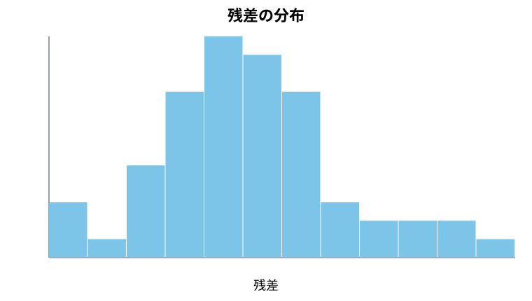
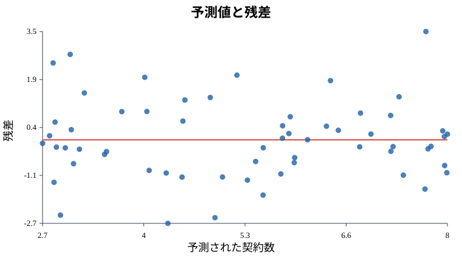
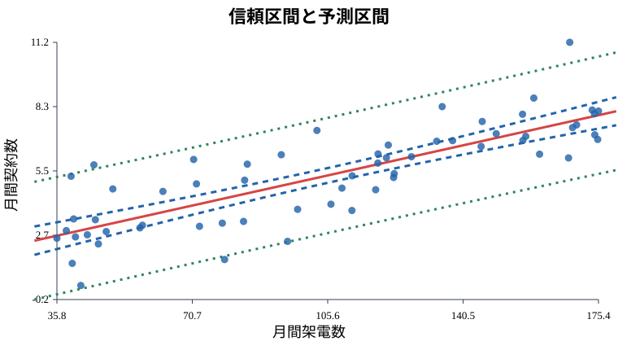
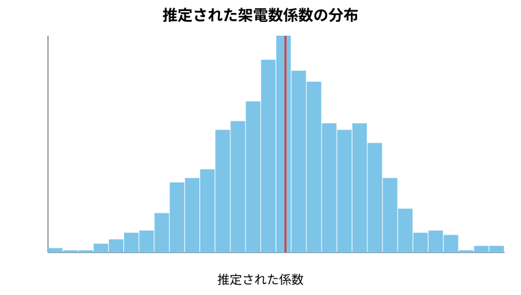

3. 回帰係数の誤差範囲、残差の誤差範囲
この資料の具体例
この資料では、営業活動と契約数を例にします。
営業部門で、架電数から契約数を予測するモデルを作ったとします。
契約数 = 0.8 + 0.04 × 架電数架電数が100件なら、
0.8 + 0.04 × 100 = 4.8なので、契約数は約4.8件と予測できます。
でも実務では、ぴったり4.8件になるとは考えません。実際の契約数は、3件かもしれないし、6件かもしれません。
そこで必要になるのが、誤差範囲の考え方です。
A. 理論理解と説明
推定値にはブレがある
回帰分析で得られる係数は、データから計算した推定値です。
ある月の営業データでは、架電数の係数が 0.04 になったとします。
しかし、別の月のデータで分析したら、0.035 かもしれません。0.047 かもしれません。
データには偶然のばらつきがあります。だから、係数にも不確かさがあります。
回帰係数の標準誤差
回帰係数の標準誤差は、
推定された係数が、どれくらいブレそうかを表します。
Rの summary(model) では、Std. Error という列に出ます。
標準誤差が小さいほど、係数の推定は安定しています。標準誤差が大きいほど、係数の推定は不安定です。
回帰係数の信頼区間
信頼区間は、係数のもっともらしい範囲です。
たとえば、架電数の係数について、
95%信頼区間: 0.030 から 0.050となったとします。
これは、「架電数1件あたりの効果は、だいたい0.03から0.05件くらいの範囲で考えるのが自然」と読めます。
残差の誤差範囲
残差は、
残差 = 実際の契約数 - 予測された契約数です。
残差が大きいほど、予測が外れています。
Rの summary(model) では、Residual standard error が表示されます。これは、残差の代表的な大きさです。
信頼区間と予測区間
回帰分析では、区間には大きく2種類あります。
信頼区間: 平均的な契約数の推定範囲
予測区間: 新しい1人の契約数の予測範囲普通、予測区間の方が広くなります。1人の結果には、個人差や偶然のズレが入るからです。
B. 実践: Rによるモデル構築
まず、サンプルデータを作ります。
set.seed(123)
n <- 60
calls <- runif(n, min = 30, max = 180)
error <- rnorm(n, mean = 0, sd = 1.2)
contracts <- 1.0 + 0.04 * calls + error
sales <- data.frame(calls, contracts)
model <- lm(contracts ~ calls, data = sales)
summary(model)係数の信頼区間を見ます。
confint(model, level = 0.95)予測値と残差を取り出します。
sales$predicted <- fitted(model)
sales$residual <- residuals(model)
head(sales)C. サンプルデータによるシミュレーションと可視化
残差を可視化する
残差の分布をヒストグラムで見ます。
hist(sales$residual,
breaks = 10,
main = "残差の分布",
xlab = "残差",
col = "gray")
予測値と残差の関係も見ます。
plot(sales$predicted, sales$residual,
xlab = "予測された契約数",
ylab = "残差",
main = "予測値と残差",
pch = 19)
abline(h = 0, col = "red", lwd = 2)
残差が0の上下にランダムに散らばっていれば、直線モデルとしては悪くなさそうです。曲線の形が見える、右に行くほどばらつきが大きい、極端に離れた点がある、といった場合は注意が必要です。
信頼区間と予測区間を可視化する
新しい架電数に対して、信頼区間と予測区間を出します。
new_sales <- data.frame(calls = seq(30, 180, length.out = 100))
conf <- predict(model, newdata = new_sales, interval = "confidence")
pred <- predict(model, newdata = new_sales, interval = "prediction")
plot(sales$calls, sales$contracts,
xlab = "月間架電数",
ylab = "月間契約数",
main = "信頼区間と予測区間",
pch = 19)
lines(new_sales$calls, conf[, "fit"], col = "red", lwd = 2)
lines(new_sales$calls, conf[, "lwr"], col = "blue", lty = 2)
lines(new_sales$calls, conf[, "upr"], col = "blue", lty = 2)
lines(new_sales$calls, pred[, "lwr"], col = "darkgreen", lty = 3)
lines(new_sales$calls, pred[, "upr"], col = "darkgreen", lty = 3)
legend("topleft",
legend = c("回帰直線", "信頼区間", "予測区間"),
col = c("red", "blue", "darkgreen"),
lty = c(1, 2, 3),
bty = "n")
青い線が平均的な契約数の信頼区間、緑の線が新しい1人の契約数の予測区間です。予測区間の方が広いことがわかります。
係数のブレを可視化する
同じ条件で何度もデータを作ると、推定された回帰係数がどれくらいブレるかを見られます。
set.seed(123)
B <- 1000
n <- 60
slopes <- numeric(B)
for (i in 1:B) {
calls <- runif(n, 30, 180)
error <- rnorm(n, 0, 1.2)
contracts <- 1.0 + 0.04 * calls + error
m <- lm(contracts ~ calls)
slopes[i] <- coef(m)[2]
}
hist(slopes,
breaks = 30,
main = "推定された架電数係数の分布",
xlab = "推定された係数",
col = "skyblue")
abline(v = 0.04, col = "red", lwd = 2)
mean(slopes)
sd(slopes)
本当の係数は 0.04 です。シミュレーションを1000回行うと、推定された係数は 0.04 の周りに分布します。
この分布の広がりが、「回帰係数には誤差範囲がある」ということを表しています。